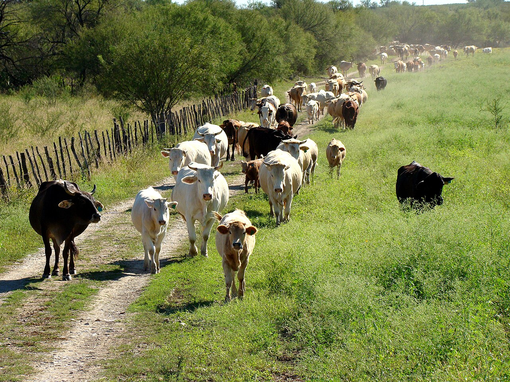

🐄 Ganadería

La ganadería es la cría y reproducción de animales domesticos con fines economicos. Su proposito es obtener carne, leche, lana, cueros y otros productos de origen animal para el consumo humano y la industria.
Es una actividad ancestral que ha evolucionado desde sistemas tradicionales hasta operaciones modernas de gran escala. La ganaderia representa una fuente importante de empleo rural y contribuye significativamente al PIB agrícola de muchas naciones.
Tipos de Ganadería según el animal
| Tipo | Animal | Productos principales | Ciclo productivo |
|---|---|---|---|
| BOVINA | Vacas, toros | Carne, leche, cuero | 3-5 años |
| OVINA | Ovejas, carneros | Carne, lana, leche | 1-2 años |
| PORCINA | Cerdos, marranas | Carne (jamon, bacon) | 6-8 meses |
| AVICOLA | Gallinas, pavos | Carne, huevos, plumas | 2-3 meses |
Equipamiento e Instalaciones
- • Alojamiento
- • Ventilacion
- • Sanidad
- • Rotacion
- • Mejora genetica
- • Riego
- • Ordeñadores
- • Trituradores
- • Tractores
- • Vacunacion
- • Nutricion
- • Monitoreo
🐟 Pesca y Acuicultura
La pesca es la captura de organismos acuaticos en el mar, rios y lagos. Es una actividad primaria esencial que proporciona alimento a miles de millones de personas en el mundo y genera empleo para millones de pescadores.
La acuicultura, por otro lado, es la crianza controlada de peces y mariscos en ambientes artificiales. Ambas formas coexisten en la actualidad como complementos para satisfacer la demanda global de alimentos marinos.
Metodos de Pesca
| Método | Escala | Tecnología | Sostenibilidad |
|---|---|---|---|
| ARTESANAL | Pequeña | Linea, red manual, canoa | Alta |
| INDUSTRIAL | Gran escala | Redes de arrastre, sonar, barcos factoria | Riesgo de sobrepesca |
| ACUICULTURA | Controlada | Estanques, jaulas flotantes, sistemas RAS | Media-Alta |
Especies de interes comercial
- • Salmon
- • Bacalao
- • Caballa
- • Langosta
- • Camaron
- • Cangrejo
- • Ostra
- • Almeja
- • Calamar
- • Alga marina
- • Esponjas
- • Coral
📋 Cuadro Comparativo
Analisis de diferencias clave entre la ganaderia y la pesca como actividades primarias.
| Aspecto | 🐄 Ganadería | 🐟 Pesca |
|---|---|---|
| Ambiente | Terrestre (pastos, establos) | Acuatico (mares, rios, lagos) |
| Produccion | Carne, leche, lana, huevos | Pescado, mariscos, algas |
| Ciclo | Controlado (meses a años) | Natural (variable, captura) |
| Tecnologia | Mecanica, automatizacion | Redes, sonar, sistemas refrigeracion |
| Riesgo | Enfermedades, fluctuaciones de precios | Sobrepesca, cambios climaticos |
| Mano de obra | Media, requiere capacitacion | Alta, condiciones duras |
| Renovabilidad | Recurso renovable | Renovable pero limitado |
| Impacto ambiental | Emisiones de gases, uso de tierra | Daño ecosistema marino, redes fantasma |